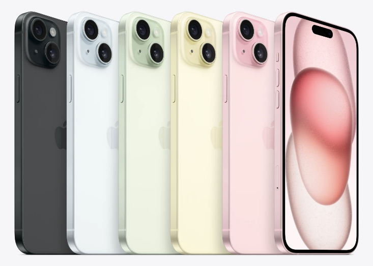

Apple이 2023년 9월 12일에 공개한 iOS 스마트폰. iPhone 시리즈의 17번째 모델이다.

iPhone 14 Plus의 후속 모델이며 iPhone 15의 대화면 파생 모델이다. 전반적인 디자인은 전작인 iPhone 14 Plus와 유사하지만 iPhone 14 Pro에 탑재된 Dynamic Island가 적용되었다. 색상은 블루, 핑크, 옐로, 그린, 블랙 이렇게 5가지가 있다. 5G NR을 지원한다. LTE는 다운로드로 최대 2.5 Gbps를 보장하고 업로드로는 최대 316 Mbps를 보장한다. 근접통신으로 Wi-Fi는 Wi-Fi 1/3/4/6을 2.4 GHz 주파수에서 지원하고 Wi-Fi 2/4/5/6을 5 GHz 주파수에서 지원한다.
AP는 TSMC 4nm 공정 기반의 Apple A16 Bionic을 사용한다. 6코어 CPU와 5코어 GPU, 16코어 Neural Engine으로 구성되어 있다. RAM은 LPDDR5 SDRAM 방식이며 6GB다. 내장 메모리는 NVMe 규격의 낸드 플래시를 사용하며 128GB, 256GB, 512GB 옵션으로 구성되어 있다.